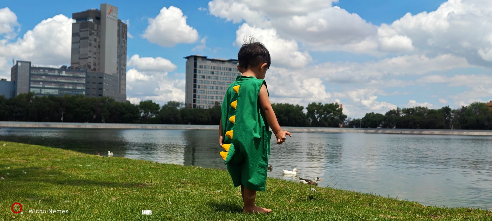

LUZ · INSTANTE · MIRADA
Un instante distinto.
Sesiones de retrato, eventos que no se repiten y una mirada que se detiene en el detalle: tres formas de mirar.
Entrar a la serie ↓FOTOGRAFÍA
Tres maneras de mirar.
Sesiones: la luz se prepara. Eventos: la luz se persigue. Mirada: la luz se encuentra. Este archivo reúne retratos, grupos, celebraciones, airsoft, paisaje, arquitectura, macro y blanco y negro.
SESIONES · EVENTOS · MIRADA
Treinta y seis imágenes.
La luz pasa.
La mirada se queda.